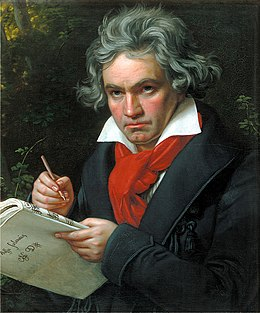

Beethoven's Ninth Symphony
The Fourth Movement
Sonata-Concerto Form
Open Ritomello
Exposition
Horror/Recitative
Joy Theme
Turkish Music
Development
Recapitulation
Joy Theme
Awe Theme
Codas Nos. 1 2 3
View the Classical Net Home page